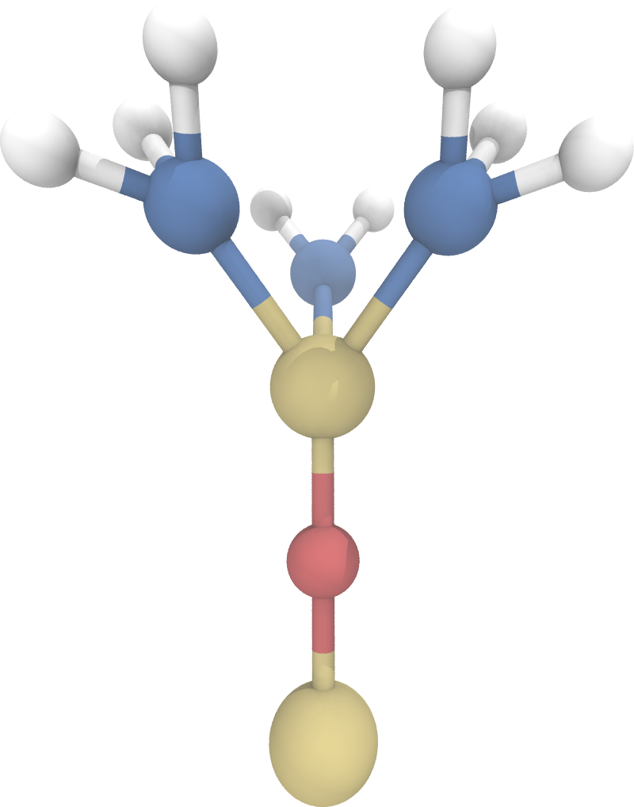
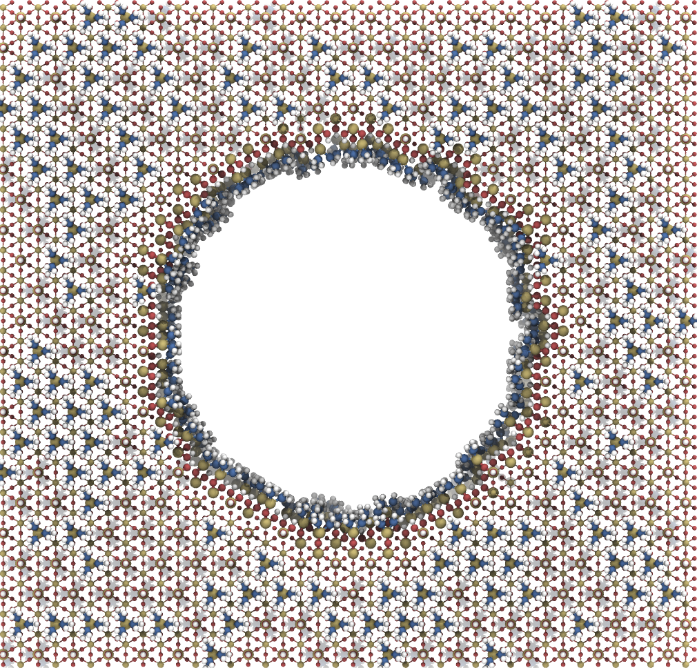

Simulation Workflow¶
In this workflow a simply pore simulation system will be created with TMS as surface molecules. Additionally, the GROMACS simulation package will be utilized.
Create surface molecules¶
Trimethylsilyl or for short TMS is a simple surface group that can be imported from the PoreMS package. Assuming a new surface group structure is to be created, following code block can be used as a base.
import porems as pms
tms = pms.Molecule("tms", "TMS")
tms.set_charge(0.96)
compress = 30
b = {"sio": 0.155, "sic": 0.186, "ch": 0.109}
a = {"ccc": 30.00, "cch": 109.47}
# Create tail
tms.add("Si", [0, 0, 0])
tms.add("O", 0, r=b["sio"])
tms.add("Si", 1, bond=[1, 0], r=b["sio"], theta=180)
# Add carbons
for i in range(3):
tms.add("C", 2, bond=[2, 1], r=b["sic"], theta=a["cch"]+compress, phi=60+120*i)
# Add hydrogens
for i in range(3, 5+1):
for j in range(3):
tms.add("H", i, bond=[i, 2], r=b["ch"], theta=a["cch"]+compress, phi=60+120*j)


Note
Parametrization must be carried out by the user. Topology generation should be performed for both a singular binding site and a geminal binding site.
Create pore system¶
Next step is to create a pore structure functionalized with the created TMS surface group.
import porems as pms
pore = pms.PoreCylinder([10, 10, 10], 6, 5.5)
pore.attach(pms.gen.tms(), 0, [0, 1], 100, "in")
pore.attach(pms.gen.tms(), 0, [0, 1], 100, "ex")
pore.finalize()


Once the generation is done, store the structure and preferably the object for future analysis. Furthermore, a master topology with the number of residues and a topology containing grid molecule parameters should be created. This is all handled by the store function
pore.store()
Simulation folder structure¶
The simulations folder provided has following structure
Top Folder
_top — Folder containing topologies
topol.top — Master topology
grid.itp — Grid molecule parameters
tip3p.itp — Topology for TIP3P water
tms.itp — Topology for TMS with singular binding site
tmsg.itp — Topology for TMS with geminal binding site
_gro — Folder containing structure files
box.gro — Simulation box
spc216.gro — Water structure to be filled in the simulation box
pore.obj — Pore object as a backup for future analysis
_mdp — Folder containing simulation parameter files
min.mdp — Energy minimization parameter file
nvt.mdp — NVT equilibration parameter file
run.mdp — Production parameter file
min — Folder for carrying out energy minimization
nvt — Folder for carrying out NVT equilibration
run — Folder for the production run
Note
Topologies provided are from the General AMBER Force Field (GAFF).
Furthermore, the excess charge which might arise from surface molecule parametrization can be distributed among the grid molecules.
Fixating surface molecules and grid¶
The grid is fixated by removing specified atoms from the energy calculation of GROMACS. This can be done by first defining an index group
gmx make_ndx -f _gro/box.gro -o _gro/index.ndx
and choosing the specified atoms. Since make_ndx works iterativaly, first the silicon atoms of the surface groups, silanol and TMS, are chosen for both geminal and singular binding sites, and then the grid molecules. In the case of the generated pore system, the call would be
5 | 6 | 7 | 8 & a SI1 | 2 | 3 | 4
This index group is then specified in the mdp files under the freezed groups tag
freezegrps = SL_SLG_TMS_TMSG_&_SI1_SI_OM_OX
freezedim = Y Y Y
Note
To make sure all fixated atoms were added to the index group, a simple calculation should be performed before simulation.
Filling box¶
The pore system is simulated in the NVT ensample, since NPT in GROMACS displaces the grid molecules in the simulation while adjusting the box-size to the pressure. Nonetheless, the system needs to be simulated at a specified density. This is done by iteratively filling the box with the solute molecules, here water, until achieving the reference density as in an NPT simulation at the desired pressure.
Note
If the GROMACS filling functions, like solvate or insert-molecules are used with small molecules, it may happen that molecules are placed within the grid. Naturally, these molecules must be removed from the grid before running the simulation.
Density analysis procedure¶
The density calculation inside and outside the pore is done by calculating the number density $\rho_n$ and using the molar mass $M$ of the molecule to determine the mass density $\rho$.
The basic idea is counting the number of molecules $N_i$ in volume slices $V_i$, thus getting the number density $\rho_{n,i}$ in these sub volumes. Inside the pore this is done by creating a radial slicing, similar to the radial distribution function. These sub volumes are calculated by
$$ V_i^\text{radial}=\pi z_\text{pore}(r_i^2-r_{i-1}^2). $$
with pore length $z_\text{pore}$ and radius $r_i$ of sub volume $i$. This yields
$$ \rho_{n,i}^\text{radial}=\frac{N_i}{V_i^\text{radial}}=\frac{N_i}{\pi z_\text{pore}}\frac{1}{r_i^2-r_{i-1}^2}. $$
Outside the pore, the sub volumes are given by
$$ V_j^\text{out}=(x_\text{pore}\cdot y_\text{pore}-\pi r^2)z_j $$
with pore width $x_\text{pore}$, height $y_\text{pore}$, pore radius $r$ and slice width $z_j$. Thus
$$ \rho_{n,j}^\text{out}=\frac{N_j}{V_j^\text{out}}=\frac{N_j}{x_\text{pore}\cdot y_\text{pore}-\pi r^2}\frac{1}{z_j}. $$
Note that the outside refers to the reservoirs of the pore simulation. Therefore the slices add up to the reservoir length $z_{res}$. Since there is a reservoir on each side, they are brought together by translating the atom coordinates to one of the reservoirs. Since the outside density refers to the density of the outside surface, it does not contain the cylindrical extension of the pore inside the reservoirs.
Finally the mass density is calculated by
$$ \rho=\frac M{N_A}\rho_n $$
with Avogadro constant $N_A$. The units are then transformed to $\frac{\text{kg}}{\text m^3}$ by
$$ [\rho]=\frac{[M]\frac{\text{g}}{\text{mol}}}{[N_A]10^{23}\frac{#}{\text{mol}}}[\rho_n]\frac{#}{\text{nm}^3} =\frac{[M]}{[N_A]}[\rho_n]\cdot10\frac{\text{kg}}{\text m^3} $$
where the square brackets mean that only the variable’s value is taken. Since finding full molecules in a sub volume is difficult, the atoms of the specified molecule are counted in the sub volumes and the result is then divided by the number of atoms the molecule consists of.
Note
Necessary parameters like reservoir length and pore diameter can be imported from the backed-up pore object.